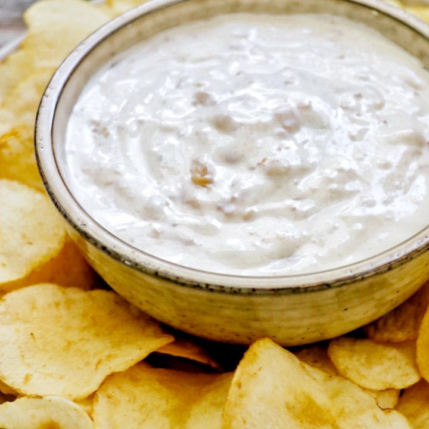

Clam Dip

Creamy Clam Dip
Super easy clam dip recipe is the perfect party snack!
Ingredients
- 2 (8 ounce) packages cream cheese, softened
- 2 (6.5 ounce) cans chopped clams
- 1 tsp white pepper
- 1 tsp yellow mustard powder
Steps
- In a mixing bowl, beat cream cheese until smooth, adding juice from the clams as you beat.
- Stir in clams.
- Stir in white pepper and mustard powder.
- Chill for 1-2 hours.
- Serve with crackers or chips.